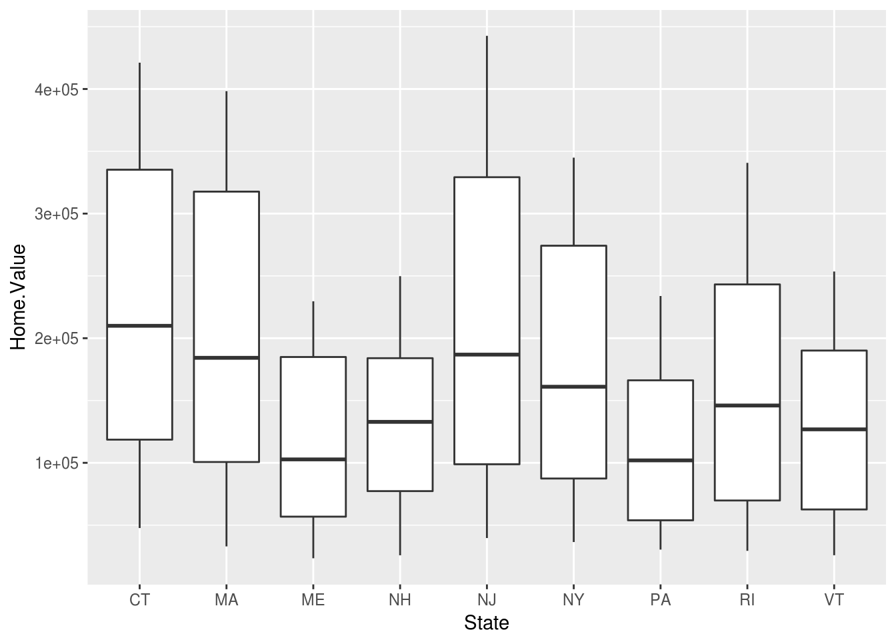

6 Basic Plots
6.1 Loading ggplot2
Like any other R package, you must load ggplot2 using the library function before you can use any of the functionality that it offers. We will also load the extensions that provide additional features:
library(ggplot2)
library(ggrepel)
library(ggthemes)
library(scales)6.2 Dataset
Let’s start by loading the housing dataset:
housing <- read.csv("https://raw.githubusercontent.com/altaf-ali/ggplot_tutorial/master/data/housing.csv")Now, let’s see what the dataset looks like:
head(housing)## State Region Date Home.Value Structure.Cost Land.Value
## 1 AK West 2010-03-01 224952 160599 64352
## 2 AK West 2010-06-01 225511 160252 65259
## 3 AK West 2009-09-01 225820 163791 62029
## 4 AK West 2009-12-01 224994 161787 63207
## 5 AK West 2007-12-01 234590 155400 79190
## 6 AK West 2008-03-01 233714 157458 76256
## Land.Share..Pct. Home.Price.Index Land.Price.Index Year Quarter
## 1 28.6 1.481 1.552 2010 1
## 2 28.9 1.484 1.576 2010 2
## 3 27.5 1.486 1.494 2009 3
## 4 28.1 1.481 1.524 2009 4
## 5 33.8 1.544 1.885 2007 4
## 6 32.6 1.538 1.817 2008 1When dealing with date and time values, it’s generally a good idea to convert them to the appropriate data type.
housing$Date <- as.Date(housing$Date)Next, we create two subsets of the data, one with housing prices only from New York, and another one with housing prices from 9 states in the North East.
newyork <- subset(housing, State == "NY")
northeast <- subset(housing, Region == "N. East")6.3 Scatter Plot
Now we’re ready to plot. Everything starts with the ggplot() function which creates a plot object. The two arguments passed to ggplot() are:
| Argument | Description |
|---|---|
data |
Dataset for the plot. It should be a data.frame or something that can be converted to data.frame |
mapping |
Aesthetic mappings for the plot |
Using the newyork dataset, let’s create a scatter plot with Date on the x-axis and Home.Value on the y-axis.
ggplot(newyork, aes(x = Date, y = Home.Value)) +
geom_point()Now let’s see which ggplot building blocks are active in the above example:

| Data | newyork |
| Mapping | aes(x = Date, y = Home.Value) |
| Geom | geom_point() |
6.4 Exercise
Use the Data Visualization with ggplot2 Cheat Sheet or any other resource to find out how to complete the exercises.
Create a histogram of
Home.Valueusing thehousingdata.Create a box plot of
Home.Valueusingnortheastdataset withStateon the x-axis
Create a line plot using
newyorkdataset withDateon the x-axis andHome.Valueon the y-axisCreate a line plot using
northeastdataset withDateon the x-axis andHome.Valueon the y-axis and use a different color for each state